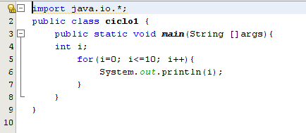

- CONTADORES: La construcción de un contador es una de las técnicas más comunes en la realización de diagramas de flujo. Es una variable en la memoria que se incrementará en una unidad cada vez que se ejecute el proceso. El contador se utiliza para llevar la cuenta de determinadas acciones que se pueden solicitar durante la resolución de un problema. En las instrucciones de preparación se realiza la inicialización del contador o contadores. La inicialización consiste en poner el valor inicial de la variable que representa al contador. Generalmente se inicializa con el valor 0.

- ACUMULADORES: Un acumulador es una variable en la memoria cuya misión es almacenar cantidades variables. Se utiliza para efectuar sumas sucesivas. La principal diferencia con el contador es que el incremento o decremento de cada suma es variable en lugar de constante como en el caso del contador.